Dualidad onda-corpúsculo
Louis de Broglie propone que la materia posee propiedades ondulatorias, sembrando la semilla de la mecánica ondulatoria.

Simposio Universitario 2026 · 100 Años (1926–2026)
Un encuentro académico de un día entre la Universidad Distrital y la Pontificia Universidad Javeriana para conmemorar un siglo de la ecuación que transformó la física y la ciencia moderna.
Entrada libre. Fechas e inscripciones se anunciarán próximamente.
Ruta académica · 1 Día
Conferencias magistrales sobre los fundamentos e historia de la ecuación de Schrödinger. (Próximamente)
Charlas sobre aplicaciones contemporáneas, sistemas cuánticos, pósters y cierre. (Próximamente)
Estamos definiendo los invitados y el cronograma detallado para esta edición.
Exploración conjunta
En 1926, Erwin Schrödinger publicó la ecuación fundamental de la mecánica ondulatoria. Cien años después, nos reunimos en una jornada interinstitucional para explorar su legado teórico, filosófico y tecnológico.
Organizan: Pontificia Universidad Javeriana y Universidad Distrital Francisco José de Caldas.
Conoce el propósito del simposio en conmemoración de los 100 años de la ecuación de Schrödinger.
Leer másPróximamente anunciaremos a los ponentes invitados que nos acompañarán en esta edición.
Ver sección de invitadosUn día de conferencias, discusión académica y encuentro estudiantil. Cronograma próximamente.
Ver programaRecibe las próximas noticias sobre fecha, registro y ponentes a través de nuestros canales de contacto.
Ver canales de contacto100 años de mecánica ondulatoria
Un recorrido por los hitos que dieron origen a la ecuación de onda en 1926 y las revoluciones que desencadenó.
Louis de Broglie propone que la materia posee propiedades ondulatorias, sembrando la semilla de la mecánica ondulatoria.
Erwin Schrödinger formula su célebre ecuación diferencial que describe la evolución temporal y espacial de los sistemas cuánticos.
Max Born interpreta la función de onda ψ como una amplitud de probabilidad, consolidando el significado físico de la ecuación.
La formulación ondulatoria demuestra su equivalencia con la mecánica matricial y abre la puerta a la física atómica, molecular y del estado sólido.
A cien años de su publicación, la ecuación de Schrödinger sigue siendo pilar de la computación cuántica, nuevos materiales y simulación.
Participa en el Simposio
Toda la información sobre inscripciones, sede y comité organizador estará disponible muy pronto.
El formulario de inscripción gratuita para la jornada se habilitará próximamente.
Más informaciónConoce más sobre la organización interinstitucional entre la UD y la PUJ.